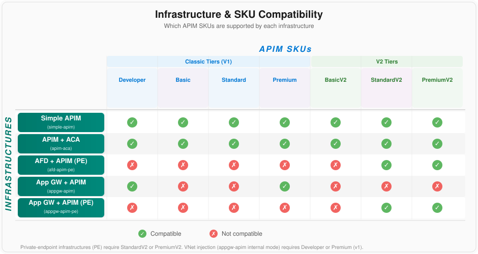

Most samples work with all infrastructures — a truly a la carte experience.

Deploy high-fidelity APIM infrastructures in minutes and experiment with real-world policy samples — an innovative a la carte approach that is neither too much nor too little.
What we'll cover in the next hour
Why does APIM Samples exist and what problem does it solve?
Experimenting with Azure API Management has historically fallen into two extremes — both leaving a gap for customers and engineers who need something practical and focused.
Full landing zone accelerators are comprehensive and production-grade, but can feel overwhelming when you just want to experiment with policies or compare architectures. The setup effort is significant.
Isolated policy snippets are handy references, but they assume an existing infrastructure. Without a running APIM instance, you can't try them in context or see how they interact with real architectures.
APIM Samples bridges this gap: real, deployable infrastructures paired with real-world policy samples. It's neither too much nor too little — it's just right.
APIM Samples decouples infrastructure from samples. Deploy any architecture, then layer on any compatible sample — mix and match freely.
Any infrastructure + any compatible sample = your custom lab
Infrastructures, samples, and key features at a glance
From simple public access to fully-private enterprise-grade networking
Publicly accessible APIM instance. Fastest to deploy (~5 min). Great for getting started.
~$1-2/hrAPIs in Azure Container Apps with public access. Ideal for container-based backends.
ACA BackendAzure Front Door to APIM via private link. Traffic rides the Microsoft backbone.
Standard V2Application Gateway to APIM via private endpoint. Secure inbound connectivity.
Standard V2Full VNet injection of APIM and ACA. Maximum network isolation. APIM is shielded unless traffic comes through App Gateway.
Max IsolationMost samples work with all infrastructures — a truly a la carte experience.
https://aka.ms/apim/samples
Each infrastructure supports specific APIM SKUs based on its networking requirements.

https://aka.ms/apim/samples
Key differentiators that set APIM Samples apart
Mix any infrastructure with any compatible sample. Not a monolith — truly a la carte.
Jupyter notebooks walk you through every step. No guessing, no tribal knowledge.
Simple APIM in ~5 minutes. Not hours of landing zone setup before you can experiment.
GitHub Codespaces or Dev Container. Everything pre-configured, no local prerequisites.
Bicep IaC, Developer CLI, pytest, ruff, code coverage. Professional development workflow.
OpenSSF Best Practices certified. CI/CD pipeline. Cross-platform (Windows, Linux, macOS).
Deploying an infrastructure, running a sample, and exploring in Azure Portal
One-click launch from the repository. Environment is ready in 2-3 minutes with everything pre-installed.
Run ./start.sh to access the interactive menu. Verify setup, run tests, manage workflows.
Open an infrastructure's create.ipynb and run all cells. Resources appear in Azure Portal.
Open a sample's create.ipynb, run all cells, make API calls, and experiment with policies.
Once deployed, explore the resources in the Azure Portal to see everything APIM Samples creates.
Practical ways to leverage APIM Samples in the field
Walk customers through architecture options. Show them how different APIM configurations work in practice, not just on paper.
Deploy an infrastructure that matches the customer's scenario and apply relevant samples. Demonstrate policy behaviors in a real environment.
Experiment with policies before committing to production. Test auth flows, rate limiting, transformations, and more in a safe sandbox.
Customers can fork the repo and continue independently. The guided notebooks and documentation make self-service exploration easy.
Every contribution makes APIM Samples better for everyone
Star the repo and share it with your network and customers.
Run the samples, file issues, and suggest improvements.
Add new samples, improve docs, or enhance existing code.
Leverage it with customers and share what you learn back.
APIM Samples fills the gap between "too much" and "too little" — offering a flexible, modular, and guided approach to learning and experimenting with Azure API Management.
5 architectures spanning simple public access to fully-private enterprise networking.
8 real-world samples with guided Jupyter notebooks and a la carte flexibility.
High-fidelity building blocks, modern tooling, and Codespaces for instant setup.
Thank you for your time. Let's discuss!